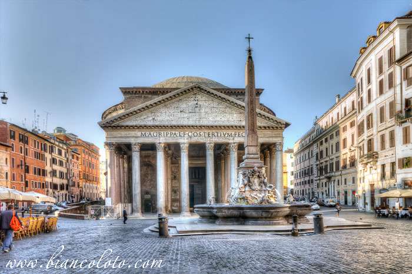

Рим (итал. Roma ) — город, столица Италии с 1870 года, административный центр провинции Рим и области Лацио. Расположен на реке Тибр. Рим — один из старейших городов мира, древняя столица Римской империи. Ещё в Античности (III век н. э.) Рим стали часто называть Вечным (лат. Roma Aeterna). Одним из первых так назвал Рим римский поэт Альбий Тибулл (I век до н. э.) в своей второй элегии. Представления о «вечности» Рима во многом сохранились и после падения древнеримской цивилизации, принеся соответствующий эпитет в современные языки. Также Рим называют «городом на семи холмах». Первоначально поселения располагались на холме Палатине, впоследствии были заселены соседние холмы: Капитолий и Квиринал. Несколько позже поселения появились на последних четырёх холмах (Целие, Авентине, Эсквилине и Виминале).
| Страна | Италия |
| Регион | Лацио |
| Координаты | 41°54′00″ с. ш. 12°30′00″ в. д.HGЯO |
| Мер | 41°54′00″ с. ш. 12°30′00″ в. д.HGЯO |
| Основан | 753 до н. э. |
| Площадь | 1287,36 км² |
| Высота НУМ | 37 м |
| Население | 2 870 493 человек (2014) |
| Плотность | 2229,75 чел./км² |
| Агломерация | 3,9 млн |
| Названия жителей | Римлянин, римлянка |
| Часовой пояс | UTC+1, летом UTC+2 |
| Телефонный код | +39 06 |
| Официальный сайт | comune.roma.it |
Что посетить в Риме
Рим – один из самых красивых городов на планете, который называют Вечным городом, в нем соединились многовековая история, культура и современность.
Колизей – древнеримский амфитеатр и самый известный археологический памятник Рима, ставший городским символом. Он видел зрелищные бои гладиаторов и поражает масштабом реализации.
Пантеон – храм всех святых, христианское сооружение, посвященное языческим богам. Пантеон был построен в II до н.э. как языческий храм, в VII в. стал христианской базиликой. Вход бесплатный, стоит потолкаться и заглянуть, чтобы полюбоваться совершенной геометрией и одним из самых большим куполов в мире с интересным отверстием, дающим поразительный световой эффект. Кроме того, в Пантеоне находятся гробницы известных людей, среди которых художник Рафаэль и король Виктор Эммануил. Размеры Колизея 188 метров на 156 метров, и он является самым большим древнеримским амфитеатром в мире.
Фонтан Треви спорит с Колизей за звание самой известной достопримечательности Рима. Внушительный фонтан занимает всю небольшую площадь, небрежно облокотившись на дворец Поли. Это один из ярких примеров римского барокко, где разворачивалась романтическая сцена в фильме «Сладкая жизни» Федерико Феллини. Кстати, не стоит пытаться повторить ночное купание сексапильной блондинки из киноленты, на ночь фонтан отключают, поток воды смолкает на радость местным жителям и бассейн пустеет, чтобы утром наполнится вновь.
Знаменитую Испанскую лестницу венчает церковь, на ее ступенях так любят сидеть туристы и римляне. У подножия лестницы установлен фонтан «Лодка» работы Бернини-отца. Если роскошные магазины не затянули вас, то найдите статую Бабуина – это одна из «говорящих» статуй Рима и загляните в историческое кафе «Греко».
Где дёшево остановиться
В основном, все недорогие отели и хостелы в Риме находятся далеко от исторического центра, иногда, приходится добираться до метро с пересадкой на автобусе. Если это Вас не сильно волнует, то могу посоветовать отель "Domus Appia Antica", цена за ночь в двухместном номере с одной кроватью, душ в номере, завтрак включен от 50 евро за ночь. Правда находится он в десяти минутах езды на автобусе от станции метро Arco Di Travertino. Удачней расположен отель "Brunella", особенно для тех, кто прилетает в аэропорт Фьюмичино, от которого идет к отелю прямой автобус, автобусная остановка прямо напротив здания отеля. Здесь за двухместный номер с завтраком и общей ванной возьмут 52 евро, а за одноместный, на таких-же условиях - 49 евро. От отеля можно пешком дойти к ж/д вокзалу Рома Трастевере, который находится за 200 метров.
Большинство гостиниц в Риме довольно дорогие, самый недорогой номер, в котором даже нет душа и кондиционера, будет стоить Вам не менее 60 €, а если в номере есть ванная то даже 90 €. Но если необходимо устроиться на ночь еще дешевле, то придется обойтись не только без душа но и некоторых привычных удобств и остановиться на ночлег в хостеле или монастыре. Стоимость постели там обойдется примерно от 20 € до 40 € за ночь, но если хостел официальный и входит в ассоциацию Hostelling International, в добавок придется приобрести членскую карточку за 6 €. При этом Вам придется не только рано возвращаться, но и соблюдать довольно строгий местный режим.
Еда в Риме. Что попробовать и где поесть в Риме
Итальянская кухня-одна из самых популярных в мире, количество ресторанов итальянской кухни даже в самом маленьком городе России просто зашкаливает. Разнообразные пиццы и пасты уже нашли своих поклонников и в России и во всем остальном мире. Но итальянская кухня — это далеко не только пицца и паста, и гурманы это очень хорошо знают.
Закуски или antipasti
Выбор закусок в Риме огромен. Начиная от брускетты (bruschette) — это свежий поджаренный хлеб с оливковым маслом и томатами, салата сaprese, prosciuto e mozarella (прошюто,т.е. сыровяленная ветчина с моцареллой), и моего любимого prosciuto e melone (прошюто с дыней) и заканчивая такими экзотическими для нас блюдами, как fiori di zucca (цветки цукини, наполненные сыром моцарелла и анчоусамии и обжаренные в кляре) и carciofo alla romana (жареные артишоки).
Паста
«У итальянцев только две вещи на уме, одна из них спагетти». Катрин Денев
Паста — это второе по популярности блюдо итальянской кухни после пиццы. Видов пасты не счесть: карбонара, болоньезе, паста с грибами, с томатным соусом, с соусом песто, паста с морепродуктами и т.д. до бесконечности. Именно римской пастой считается Pasta alla Carbonara — с беконом, яйцом и сливочным соусом. Но общего с нашей, российской пастой Карбонара, настоящая римская почти ничего не имеет. Еще одна типичная римская паста – Cacio e Pepe, что в переводе означает «сыр и перец» (соответственно, в состав этой пасты входят всего три ингредиента: паста, сыр Pecorino Romano, и черный перец). И да, кстати, паста у итальянцев — это первое блюдо (primi piatti)
Десерты или Dolci.
Какой самый популярный итальянский десерт? Конечно, tiramisu. Классический тирамису готовится с кофе. Но только в Риме Вы можете попробовать тирамису клубничный, банановый или фисташковый. Да не абы где, а в кондитерской с более чем 50 летней историей. Кондитерская Pompi имеет несколько локаций, одна из которых рядом с Испанской лестницей. Отдельное удовольствие посидеть на лестнице, вкушая этот невероятный десерт.
Ну и куда без gelato? То есть итальянского мороженого. Итальянское мороженое считается по праву самым вкусным в мире. И не смотря на то, что самое вкусное итальянское мороженое — на Сицилии, римское тоже очень-очень вкусное. Покупать джелато можно хоть где, оно будет вкусным независимо от размера джелатерии или цены.
Фото:
